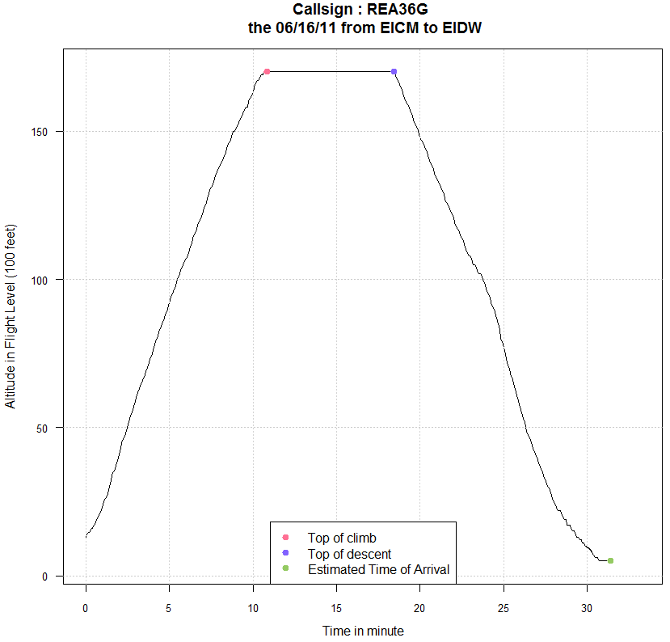
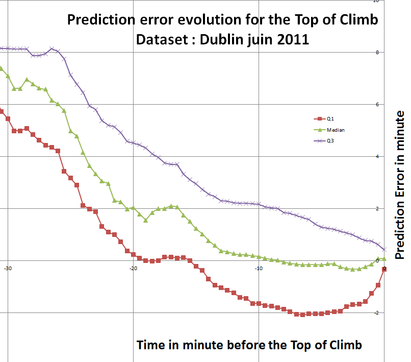
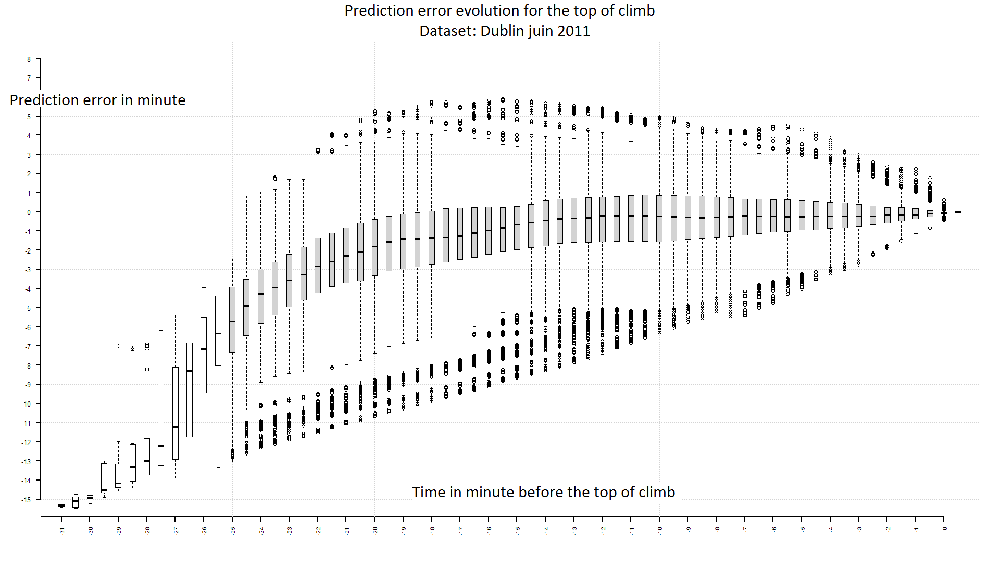
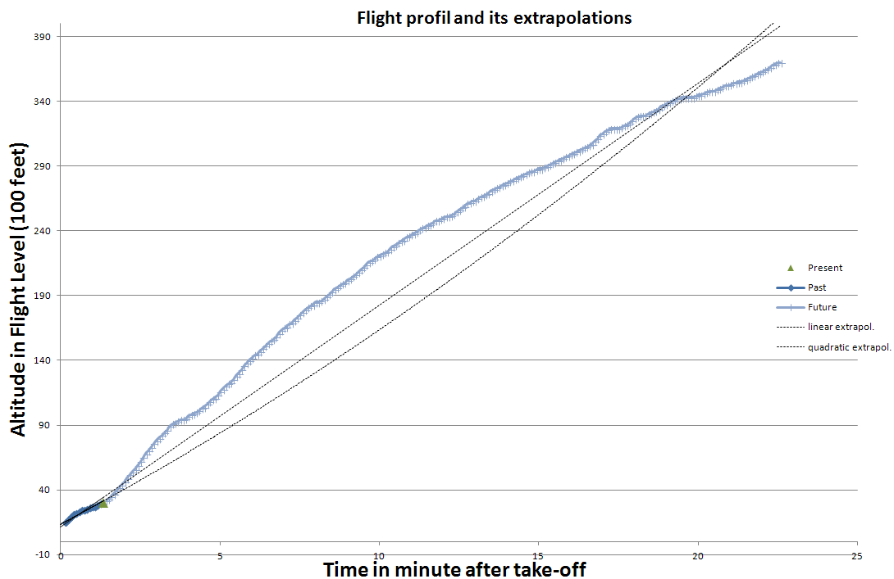
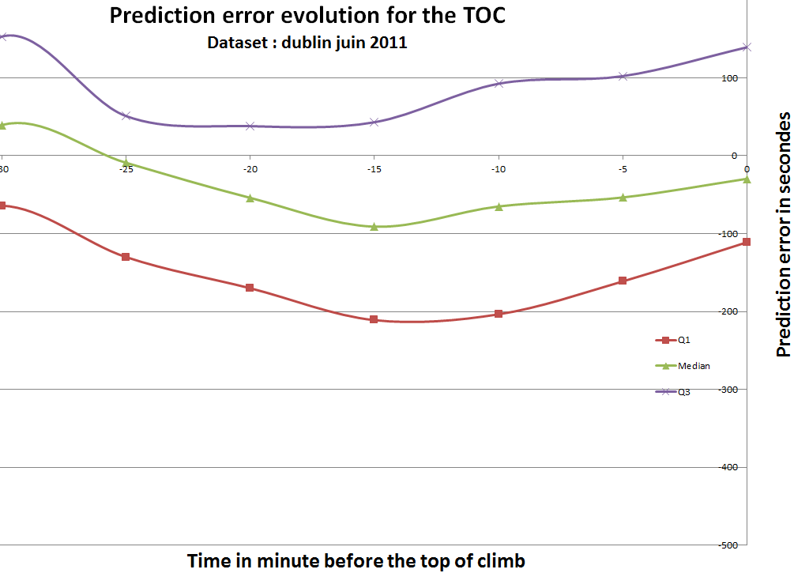
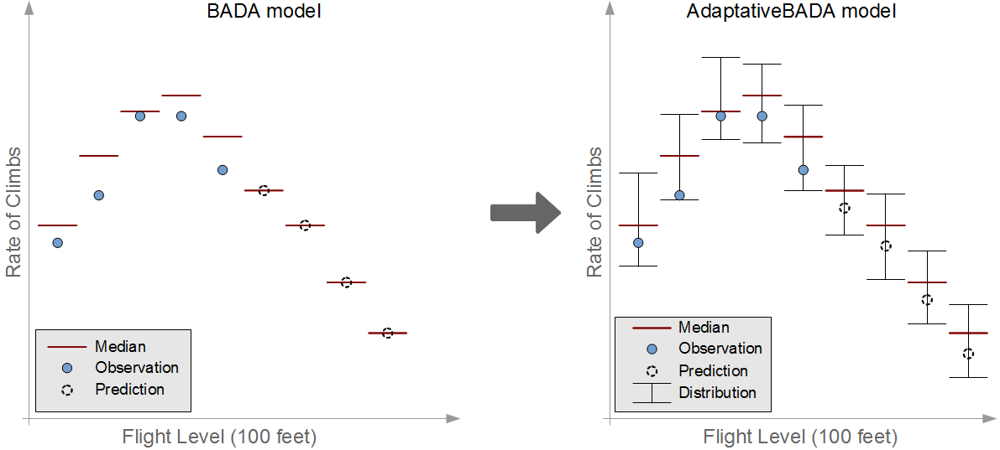

TP Learning
Trajectory prediction accuracy and its improvement
Created by Gaumont Noé supervised by Hadjaz Areski and Marceau-Caron Gaetan
what is the purpose of this study ?
Study of temporal predictions on characteristic trajectory points, such as the top of climb. In order to do so, real tracks and predictions are used in two ways:
Rate the predictions made by the FMS or with BADA
Develop innovative methods which hopefully make better predictions
Which points are studied?
FMS Predictions
Bada Prediction
Are the new method more effective or more efficient?
Several methods have been tested during the intership:
- Some of them aren't competitive
- Some of them could be competive
- Some of them are competive
Extrapolation doesn't work
What is the method?
Using aircraft previous positions in order to extrapolate futur positions, ie fit a curve to the flight profile.
What is the method?
Results:
It's a complex method with an expensive computation time. This method needs a lot of past positions to achieve an accurate prediction.
Results

Prediction correction could works
What is the method?
Use existing predictions and then improve them. Learn an offset to apply from predictions made by the FMS. The computed offset depends on the remaining time before the estimated TOC.
FMS Predictions
Results:
Corrections are pretty good for long term prediction, for shorter prediction corrections are poorer. There is still a lot of uncertainty even for short term predictions. If the FMS makes erratic prediction, this method will be affected.
Results
Construct an adaptative BADA works
What is the method?
Just like for BADA, compute the rate of climb for each layer. The ROC are learned from a dataset. The main difference is that an entire distribution is stored for each layer instead of a single value for the BADA. The flight history will also be taken into account by storing the rank in the distribution for each ROC recorded. Future ROC are estimated according to this history
What is the method?
Results:
Predictions are more accurate. There is less uncertainty in prediction. This method use only trustworthy data, currently collected by ADS-B
Results

Results